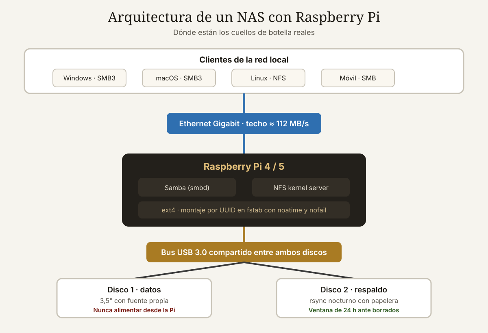

Qué cubre esta guía
- Por qué una Raspberry Pi como NAS (y cuándo no)
- Hardware: qué comprar y qué evitar
- Preparar el sistema y los discos
- Samba: compartir con Windows, macOS y Linux
- NFS para clientes Linux
- RAID con mdadm: qué protege y qué no
- Copias de seguridad: la regla 3-2-1
- OpenMediaVault: la alternativa con interfaz web
- Rendimiento real y resolución de problemas
- Conclusión
- Preguntas frecuentes
Por qué una Raspberry Pi como NAS (y cuándo no)
Un NAS (Network Attached Storage) es un equipo conectado a tu red cuya única función es servir archivos. Comprar uno de fábrica de dos bahías cuesta una cifra respetable antes de añadir los discos. Una Raspberry Pi con un par de discos USB hace lo mismo para un uso doméstico, y de paso te enseña cómo funciona todo por dentro.
Casos donde la Pi es una excelente elección
- Almacenamiento compartido de documentos, fotos y proyectos entre varios equipos de casa.
- Destino de copias de seguridad automáticas de portátiles y escritorios.
- Servidor multimedia para reproducción directa (sin transcodificación) en la red local.
- Repositorio Git privado, servidor de archivos para impresión 3D, o almacenamiento de imágenes de cámaras de seguridad.
- Aprender administración de sistemas Linux con un objetivo útil.
Casos donde deberías comprar un NAS real
- Transcodificación de video 4K en vivo para varios usuarios. La Pi no tiene músculo para eso.
- Más de cuatro discos o necesidad de bahías intercambiables en caliente.
- Datos críticos de negocio donde el tiempo de recuperación importa y necesitas soporte del fabricante.
- Rendimiento sostenido por encima de 110 MB/s, que es el techo práctico de una red Gigabit.
Hardware: qué comprar y qué evitar
La placa
| Modelo | Ethernet | USB 3.0 | Arranque desde NVMe | Veredicto como NAS |
|---|---|---|---|---|
| Raspberry Pi 3B+ | Gigabit limitada a ~300 Mb/s | No (solo USB 2.0) | No | Insuficiente |
| Raspberry Pi 4 (4/8 GB) | Gigabit real | Sí, 2 puertos | Solo por USB | Muy buena opción |
| Raspberry Pi 5 (4/8/16 GB) | Gigabit real | Sí, 2 puertos | Sí, por PCIe con HAT | La mejor opción |
La Raspberry Pi 5 es preferible por dos motivos concretos: su conector PCIe permite arrancar el sistema desde un SSD NVMe (mucho más fiable que una microSD, que acabará muriendo por escrituras) y su controlador USB gestiona mejor las transferencias concurrentes. La Pi 4 con 4 GB sigue siendo perfectamente válida y suele encontrarse más barata.
La memoria RAM importa menos de lo que parece para un NAS puro: 4 GB sobran para Samba. Sube a 8 GB solo si vas a ejecutar contenedores Docker, Nextcloud o un servidor multimedia en la misma placa.
Los discos: el punto crítico
Opciones ordenadas de mejor a peor:
- Disco de 3,5" en carcasa con fuente de alimentación propia. La opción más fiable y con mejor precio por terabyte.
- Disco de 2,5" en carcasa USB 3.0. Se alimenta del puerto, consume poco (unos 5 W). Válido para uno o dos discos con una fuente oficial de la Pi.
- SSD SATA en adaptador USB 3.0. Silencioso, rápido y sin partes móviles. Más caro por terabyte, pero excelente para volúmenes moderados.
- Hub USB 3.0 con alimentación externa si necesitas conectar varios discos. Compra uno de marca conocida: los hubs baratos son la causa número uno de desconexiones misteriosas.
Alimentación de la propia Pi
Usa la fuente oficial: 5 V/3 A para la Pi 4, 5 V/5 A USB-C con PD para la Pi 5. Un cargador de móvil genérico provoca caídas de tensión bajo carga, y la Pi responde reduciendo su frecuencia o reiniciándose en el peor momento, que siempre es durante una escritura.
Preparar el sistema y los discos
Sistema operativo
Instala Raspberry Pi OS Lite (64 bits) con Raspberry Pi Imager. La versión Lite no trae escritorio, que es exactamente lo que quieres en un servidor: menos software, menos consumo, menos superficie de ataque. En el propio Imager, con el icono del engranaje, configura de antemano el nombre del equipo, el usuario, la contraseña y habilita SSH.
# Primer arranque: conectar por SSH y actualizar
ssh usuario@raspberrypi.local
sudo apt update && sudo apt full-upgrade -y
sudo rebootIdentificar los discos
lsblk -o NAME,SIZE,FSTYPE,MOUNTPOINT,MODEL
# Ejemplo de salida:
# sda 3,6T Seagate Expansion
# └─sda1 3,6T ntfs
# sdb 3,6T Seagate ExpansionParticionar y formatear
/dev/sda es el disco que crees. Confundir el dispositivo destruye datos de forma irreversible.# Crear tabla GPT y una partición que ocupe todo el disco
sudo parted /dev/sda --script mklabel gpt
sudo parted /dev/sda --script mkpart primary ext4 0% 100%
# Formatear en ext4 con etiqueta identificable
sudo mkfs.ext4 -L datos1 /dev/sda1
# Reducir el espacio reservado para root del 5 % al 1 %
# (en un disco de 4 TB esto libera unos 160 GB)
sudo tune2fs -m 1 /dev/sda1Por qué ext4 y no otro sistema de archivos
| Sistema | Ventaja | Inconveniente | Uso recomendado |
|---|---|---|---|
| ext4 | Maduro, rápido, permisos POSIX completos | No se lee de forma nativa en Windows | Predeterminado para el NAS |
| Btrfs | Instantáneas, sumas de verificación, compresión | Más complejo, algo más lento en la Pi | Usuarios avanzados |
| XFS | Excelente con archivos grandes | No se puede reducir el tamaño | Volúmenes de video |
| exFAT | Se lee en Windows, macOS y Linux | Sin permisos ni journaling: frágil | Solo discos portátiles, nunca el NAS |
| NTFS | Compatible con Windows | Controlador lento en Linux, alto uso de CPU | Evitar |
Como el acceso será por red mediante Samba, el sistema de archivos del disco es irrelevante para los clientes Windows: ellos ven un recurso compartido, no el sistema subyacente. Por eso ext4 es la elección correcta.
Montaje automático por UUID
Nunca montes por /dev/sda1: si desconectas y reconectas los discos, el orden puede cambiar y montarías el disco equivocado. Usa siempre el UUID, que es único y permanente.
# Obtener los UUID
sudo blkid
# Crear los puntos de montaje
sudo mkdir -p /srv/nas/datos1 /srv/nas/datos2
# Editar /etc/fstab y añadir (una línea por disco):
UUID=xxxxxxxx-xxxx-xxxx-xxxx-xxxxxxxxxxxx /srv/nas/datos1 ext4 defaults,noatime,nofail,x-systemd.device-timeout=30 0 2
# Probar sin reiniciar
sudo systemctl daemon-reload
sudo mount -a
df -h /srv/nas/datos1Las opciones importan: noatime evita escribir la marca de último acceso en cada lectura (menos desgaste y más velocidad), y nofail es imprescindible: sin ella, si un disco no está presente al arrancar, el sistema se queda esperando indefinidamente y pierdes el acceso por SSH.
Samba: compartir con Windows, macOS y Linux
Samba implementa el protocolo SMB, el mismo que usa Windows para sus carpetas compartidas. Es la opción universal: funciona en Windows, macOS, Linux, Android y iOS sin instalar nada en el cliente.
sudo apt install samba samba-common-bin -yCrear el usuario de red
# Usuario del sistema sin shell de acceso, solo para archivos
sudo useradd -M -s /usr/sbin/nologin nasuser
sudo groupadd nasgroup
sudo usermod -aG nasgroup nasuser
# Contraseña específica de Samba (independiente de la del sistema)
sudo smbpasswd -a nasuser
sudo smbpasswd -e nasuser
# Permisos sobre los datos
sudo chown -R nasuser:nasgroup /srv/nas
sudo chmod -R 2770 /srv/nasEl bit 2 inicial en 2770 es el setgid: hace que todo archivo creado dentro herede el grupo del directorio, lo que evita los problemas de permisos más comunes cuando varios usuarios escriben en la misma carpeta.
Configuración de Samba
sudo nano /etc/samba/smb.conf[global]
workgroup = WORKGROUP
server string = NAS Raspberry Pi
security = user
map to guest = never
# Forzar SMB3: SMB1 es inseguro y está obsoleto
server min protocol = SMB3
client min protocol = SMB3
# Rendimiento
socket options = TCP_NODELAY IPTOS_LOWDELAY
use sendfile = yes
read raw = yes
write raw = yes
# Evitar archivos basura de macOS
veto files = /._*/.DS_Store/
delete veto files = yes
[Datos]
path = /srv/nas/datos1
browseable = yes
read only = no
valid users = @nasgroup
create mask = 0660
directory mask = 2770
force group = nasgroup
[Respaldos]
path = /srv/nas/datos2
browseable = yes
read only = no
valid users = @nasgroup
create mask = 0660
directory mask = 2770
force group = nasgroup# Verificar la sintaxis antes de reiniciar
testparm
sudo systemctl restart smbd nmbd
sudo systemctl enable smbd nmbdConectarse desde los clientes
- Windows: en el explorador, escribe
\\raspberrypi\Datoso\\192.168.1.50\Datos. Marca "conectar con otras credenciales" y usanasuser. - macOS: Finder → Ir → Conectarse al servidor →
smb://raspberrypi/Datos. - Linux: en el gestor de archivos,
smb://raspberrypi/Datos, o montarlo permanentemente concifs-utils.
NFS para clientes Linux
Si todos tus clientes son Linux, NFS es más rápido que Samba y conserva los permisos POSIX de forma nativa. Nada impide exportar los mismos directorios por ambos protocolos.
sudo apt install nfs-kernel-server -y
sudo nano /etc/exports# Exportar solo a la red local, nunca a 0.0.0.0/0
/srv/nas/datos1 192.168.1.0/24(rw,sync,no_subtree_check,root_squash)sudo exportfs -ra
sudo systemctl restart nfs-kernel-server
# Desde el cliente Linux:
sudo mount -t nfs 192.168.1.50:/srv/nas/datos1 /mnt/nasLa opción root_squash es de seguridad: convierte al usuario root del cliente en un usuario sin privilegios en el servidor, evitando que cualquiera con root en su máquina pueda hacer lo que quiera con tus archivos.
RAID con mdadm: qué protege y qué no
Si tienes dos discos iguales, puedes crear un espejo (RAID 1) por software. Cada archivo se escribe en ambos discos; si uno falla, el sistema sigue funcionando con el otro.
sudo apt install mdadm -y
# Crear un espejo RAID 1 con dos discos
sudo mdadm --create /dev/md0 --level=1 --raid-devices=2 /dev/sda1 /dev/sdb1
# Vigilar la sincronización inicial (puede tardar horas)
cat /proc/mdstat
# Formatear y guardar la configuración
sudo mkfs.ext4 -L nasraid /dev/md0
sudo mdadm --detail --scan | sudo tee -a /etc/mdadm/mdadm.conf
sudo update-initramfs -u| Nivel | Discos mínimos | Capacidad útil | Tolerancia a fallos | Comentario |
|---|---|---|---|---|
| RAID 0 | 2 | 100 % | Ninguna | Un disco muere y pierdes todo. Evitar. |
| RAID 1 | 2 | 50 % | 1 disco | La opción sensata en una Pi |
| RAID 5 | 3 | ~67 % | 1 disco | Reconstrucción muy lenta por USB |
| Sin RAID + rsync | 2 | 50 % | 1 disco, con retraso | Protege también del borrado accidental |
Para un NAS doméstico suele ser más útil no usar RAID y en su lugar programar una sincronización nocturna del disco 1 al disco 2 con rsync. Pierdes la disponibilidad inmediata ante un fallo, pero ganas una ventana de recuperación de 24 horas ante borrados accidentales, que es un accidente mucho más frecuente que la muerte de un disco.
Copias de seguridad: la regla 3-2-1
La regla clásica: 3 copias de tus datos, en 2 medios distintos, con 1 fuera de casa. Tu NAS es una de esas copias, no la única.
# Sincronización local nocturna disco1 → disco2
sudo nano /usr/local/bin/nas-backup.sh#!/bin/bash
set -euo pipefail
ORIGEN="/srv/nas/datos1/"
DESTINO="/srv/nas/datos2/respaldo/"
LOG="/var/log/nas-backup.log"
if ! mountpoint -q /srv/nas/datos2; then
echo "$(date -Is) ERROR: destino no montado" >> "$LOG"
exit 1
fi
rsync -aAX --delete \
--backup --backup-dir="/srv/nas/datos2/borrados/$(date +%F)" \
--log-file="$LOG" \
"$ORIGEN" "$DESTINO"
echo "$(date -Is) Respaldo completado" >> "$LOG"sudo chmod +x /usr/local/bin/nas-backup.sh
# Programar a las 03:00 con systemd timer o cron
sudo crontab -e
# Añadir:
0 3 * * * /usr/local/bin/nas-backup.shFíjate en la opción --backup-dir: en lugar de borrar los archivos que desaparecieron del origen, los mueve a una carpeta fechada. Eso convierte una sincronización destructiva en una con papelera, y te salva del error humano.
La copia fuera de casa
Para la tercera copia tienes dos rutas razonables: un disco externo que rotes físicamente cada mes y guardes en otro lugar, o una sincronización cifrada a almacenamiento en la nube con rclone o restic. Cifra siempre antes de subir: la nube es el ordenador de otra persona.
# Ejemplo con restic hacia un destino remoto, con cifrado y deduplicación
restic -r sftp:usuario@servidor:/respaldos/nas backup /srv/nas/datos1
restic -r sftp:usuario@servidor:/respaldos/nas forget --keep-daily 7 --keep-weekly 4 --keep-monthly 12 --pruneOpenMediaVault: la alternativa con interfaz web
Si prefieres administrar el NAS desde el navegador en lugar de por línea de comandos, OpenMediaVault (OMV) es una distribución basada en Debian que instala una interfaz web completa sobre tu Raspberry Pi OS existente.
wget -O - https://github.com/OpenMediaVault-Plugin-Developers/installScript/raw/master/install | sudo bash| Aspecto | Samba manual | OpenMediaVault |
|---|---|---|
| Curva de aprendizaje | Media: hay que editar archivos | Baja: todo por interfaz web |
| Consumo de recursos | Mínimo (~60 MB RAM) | Moderado (~400 MB RAM) |
| Gestión de discos y RAID | Comandos | Interfaz gráfica |
| Usuarios y permisos | Manual | Formulario web |
| Docker y extras | Instalación manual | Plugin integrado |
| Control y transparencia | Total | Menor: abstrae la configuración |
| Valor didáctico | Alto | Bajo |
Recomendación práctica: si el NAS es para ti y quieres aprender, hazlo a mano; entenderás cada pieza y podrás reparar cualquier cosa. Si es para la familia y quieres olvidarte, instala OMV.
Rendimiento real y resolución de problemas
Medir antes de opinar
# Velocidad del disco local, sin red de por medio
sudo dd if=/dev/zero of=/srv/nas/datos1/test.bin bs=1M count=2048 oflag=direct
sudo dd if=/srv/nas/datos1/test.bin of=/dev/null bs=1M iflag=direct
sudo rm /srv/nas/datos1/test.bin
# Velocidad de red pura entre cliente y NAS
# En la Pi: iperf3 -s
# En el cliente: iperf3 -c 192.168.1.50Este par de pruebas separa los dos posibles culpables. Si dd da 130 MB/s y iperf3 da 940 Mb/s pero Samba solo alcanza 40 MB/s, el problema está en la configuración de Samba o en el cliente, no en el hardware.
| Síntoma | Causa habitual | Solución |
|---|---|---|
| El disco se desconecta solo | Alimentación insuficiente | Fuente externa para el disco o hub alimentado |
| Velocidad de 10-20 MB/s | Negociación a 100 Mb/s o WiFi | Verificar con ethtool eth0; usar cable Cat 5e o superior |
| La Pi no arranca con los discos conectados | Pico de consumo al arrancar | Añadir nofail en fstab; encender discos antes que la Pi |
| Permiso denegado desde Windows | Permisos POSIX o usuario Samba | Revisar chown, valid users y smbpasswd -e |
| Muy lento con archivos pequeños | Latencia por operación, normal en SMB | Comprimir en un archivo antes de transferir |
| El sistema de archivos se corrompe | Cortes de energía o USB inestable | SAI, cable USB corto y de calidad, fsck periódico |
| Se calienta y baja el rendimiento | Limitación térmica | Disipador o caja con ventilador |
Vigilar la salud de los discos
sudo apt install smartmontools -y
sudo smartctl -a -d sat /dev/sda | grep -E "Reallocated|Pending|Uncorrectable|Temperature"
# Prueba corta (unos 2 minutos)
sudo smartctl -t short -d sat /dev/sdaLos atributos Reallocated_Sector_Ct y Current_Pending_Sector son los que anticipan un fallo. Si empiezan a crecer, reemplaza el disco: los discos avisan, pero solo si miras.
Conclusión
Un NAS con Raspberry Pi es uno de los proyectos con mejor relación entre esfuerzo y utilidad diaria. Por el precio de la placa, una fuente decente y los discos, obtienes almacenamiento en red que funciona igual de bien que el de un equipo comercial para uso doméstico, con la ventaja de que entiendes exactamente cómo está construido.
Los tres puntos que separan un NAS fiable de uno que da problemas son siempre los mismos: alimentación adecuada para los discos, montaje por UUID con la opción nofail, y una estrategia de copias de seguridad real que no confunda RAID con respaldo. Resuelve esos tres y el resto es configuración.
Empieza sencillo: un disco, un recurso compartido de Samba, un script de rsync nocturno. Cuando eso lleve un mes funcionando sin sobresaltos, añade el segundo disco, la copia externa y los extras que necesites. Un NAS que funciona siempre vale más que uno con todas las funciones que falla cada quince días.
Preguntas frecuentes
¿Cuánta velocidad real alcanza un NAS con Raspberry Pi?
Con Raspberry Pi 4 o 5, cable Ethernet Gigabit y discos mecánicos en buen estado, entre 90 y 112 MB/s en transferencias de archivos grandes por Samba, que es prácticamente el techo de una red Gigabit. Con muchos archivos pequeños la velocidad cae a 10-30 MB/s por la latencia de cada operación del protocolo, algo que le ocurre igual a cualquier NAS comercial. Por WiFi la cifra depende de la calidad del enlace y raramente supera los 40 MB/s.
¿Puedo conectar discos de 3,5 pulgadas directamente a la Raspberry Pi?
No con alimentación desde el puerto USB. Un disco de 3,5" consume hasta 12 W durante el arranque del motor y los puertos USB de la Pi entregan como máximo unos 6 W repartidos entre todos. Necesitas una carcasa con fuente propia o un hub USB 3.0 con alimentación externa. Intentarlo sin alimentación adecuada provoca desconexiones aleatorias y corrupción del sistema de archivos. Los discos de 2,5 pulgadas sí funcionan directamente porque consumen unos 5 W.
¿Es mejor Samba o NFS para mi NAS?
Depende de los clientes. Samba (SMB) funciona en Windows, macOS, Linux, Android e iOS sin instalar nada, y es la opción correcta en una red doméstica mixta. NFS es más rápido y conserva los permisos POSIX de forma nativa, pero está pensado para clientes Linux o Unix. Nada impide exportar los mismos directorios por ambos protocolos: usa NFS entre máquinas Linux y Samba para todo lo demás.
¿Necesito RAID en un NAS casero?
Casi nunca. RAID 1 mantiene el servicio funcionando si un disco falla físicamente, pero no protege contra borrados accidentales, ransomware ni corrupción de archivos, porque replica esos errores al instante en ambos discos. Para un uso doméstico suele ser más útil dedicar el segundo disco a una copia diaria con rsync y la opción --backup-dir, que te da una ventana de recuperación de 24 horas frente al error humano, que es mucho más frecuente que la muerte de un disco.
¿Qué Raspberry Pi conviene más para un NAS?
La Raspberry Pi 5 es la mejor opción porque su conector PCIe permite arrancar desde un SSD NVMe, evitando el desgaste de la microSD, y su controlador USB gestiona mejor las transferencias simultáneas. La Raspberry Pi 4 con 4 GB de RAM sigue siendo una elección válida y más económica. Evita la Pi 3B+ y modelos anteriores: su Ethernet comparte bus con el USB 2.0 y el rendimiento se limita a unos 300 Mb/s. Para un NAS puro con Samba, 4 GB de RAM bastan; sube a 8 GB solo si vas a ejecutar Docker o Nextcloud.
¿Puedo usar el NAS como servidor multimedia con Plex o Jellyfin?
Sí, siempre que se limite a reproducción directa, es decir, cuando el cliente puede leer el formato original sin conversión. La Raspberry Pi no tiene potencia para transcodificar video 1080p o 4K en tiempo real para varios usuarios simultáneos, y menos aún con codificación por software. Si tu biblioteca está en formatos que tus dispositivos reproducen de forma nativa, funcionará bien; si necesitas transcodificación habitual, necesitas hardware con aceleración por GPU.
Este artículo es contenido editorial independiente: no contiene ubicaciones patrocinadas ni enlaces de afiliado. Si en futuras actualizaciones se agregan enlaces a proveedores de componentes, serán identificados explícitamente. El código y las conexiones son referenciales y deben adaptarse y probarse con tu propio hardware. Si detectas un error en esta guía, por favor avísanos.
Sigue aprendiendo
Para proteger el NAS de cortes de energía revisa la guía de sistemas de alimentación ininterrumpida, y si buscas más potencia en el mismo formato compara con el Orange Pi 5 Plus.
Fuentes primarias y lecturas recomendadas
Documentación oficial de los proyectos empleados. Verifica siempre las opciones de configuración con la versión que tengas instalada, ya que cambian entre versiones mayores.
- Raspberry Pi — Documentación oficial de hardware y sistema operativo
- Samba — Manual de referencia de smb.conf
- Linux RAID Wiki — Guía de mdadm y niveles RAID
- OpenMediaVault — Documentación oficial
- rsync — Página de manual oficial
- restic — Documentación de copias de seguridad cifradas
- smartmontools — Interpretación de atributos SMART
Enlaces revisados: 15 de agosto de 2026.